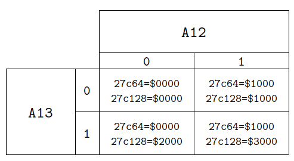

APPLE-1 PROM REPLACEMENT
PROJECT DESCRIPTION
This document summarizes how to replace the two Apple-1 PROMs (2x 256x4 bit) with a modern 27c64/28c64 mounted on dedicated PCB.
The PCB, by using the dedicated contact strips, is connected directly in place of the two PROMs.
ALL IMAGE ARE STORED IN HIGH RESOLUTION. DOWNLOAD THEM FOR A BETTER VIEW.
This operations require basic soldering skills and anti-ESD precautions.
No responsibility is taken in case of damages or whatsoever.
Pictures of the prototype:
Orientation (white dots, indicating PROM pin 1, on production PCB and white dots on the motherboard must coincide):

Version 1.0 - Single bank
Gerber File [zip]
WOZ Monitor in a 8192 bytes file suitable for EPROM 27c64 / EEPROM 28c64 (250 ns access time or better) [bin]
Version 1.1 - Dual bank - USE EEPROM 27c128 for bank switching (bin file above maps as BANK 0)
Schematic [png]
Gerber File [zip]
Schematic in EasyEDA format [json]
PCB in EasyEDA format [json]
Note: BANK 1 must be burned in EPROM from absolute address $2000.
Version 1.2 - Quad bank - USE EEPROM 27c64 for Dual bank or 27c128 for Quad bank switching (bin file above maps as A12=0, A13=0)
Schematic [png]
Gerber File [zip]
Schematic in EasyEDA format [json]
Project in EasyEDA format [zip]
Please refer to the following address map:

Schematic (Download image for a better view) and rendering. Contact strip must be soldered on the top side.
This work is licensed under CC BY 4.0